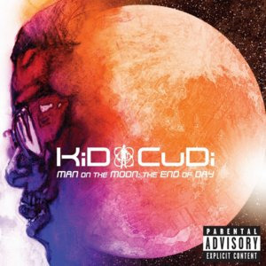
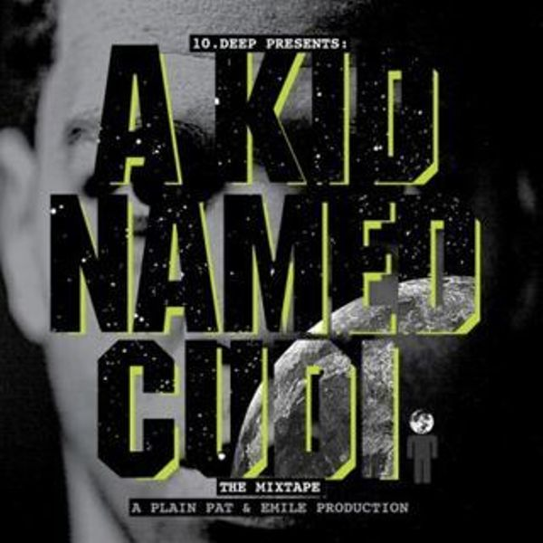

Kid Cudi
1. Man On the Moon, Vol. II
| Track List |
| 1. Scott Mescudi vs. The World |
15. All Along |
| 2. Revofev |
16. Ghost! |
| 3. Don't Play This Song |
17. Trapped In My Mind |
| 4. We Aite (Wake Your Mind Up) |
| 5. Marijuanna |
| 6. Mojo So Dope |
| 7. Ashin' Kusher |
| 8. Erase Me(feat. Kanye West) |
| 9. Wild'n Cuz I'm Young |
| 10. The Mood |
| 11. Maniac (feat. Cage & St.Vincent) |
| 12. Mr.Rager |
| 13. These Worries(feat. Mary J. Blige) |
| 14. The End |

2. Man on the moon
Pursuit of Happiness

4. A Kid Named Cudi
The Prayer
5. Passion, Pain & Demmon Slayin'
The Commander
Scott Ramon Seguro Mescudi (born January 30, 1984), better known by his stage name Kid Cudi, is an American recording artist and actor from Cleveland, Ohio.
His debut single “Day ‘n’ Nite” became an online favorite in 2008. Born Scott Ramon Seguro Mescudi in suburban Cleveland, his career got traction after he moved to Brooklyn and became affiliated with Fool’s Gold, the label of DJs A-Trak and Nick Catchdubs.
After releasing his beloved mixtape A Kid Named Cudi, Cudi’s career took off, as he got associated with Kanye West, which later led him to joining Kanye’s label G.O.O.D Music.
His catalog currently counts 6 solo studio albums, entitled: Man on the Moon: The End of Day, Man on the Moon II: The Legend of Mr. Rager, Indicud which was released after Cudi famously departed from GOOD Music and the latest ones Satellite Flight: The Journey To Mother Moon, Speedin' Bullet To Heaven and Passion, Pain & Demon Slayin'.
In addition, Cudi released an alternative rock album with long-time friend and collaborator Dot Da Genius in duo group WZRD. Cudi has also been featured on the G.O.O.D Music projects: Cruel Summer and G.O.O.D. Fridays.